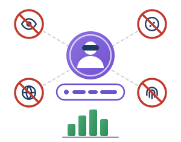

Configurazione sicura dei prompt · 3 di 3

Utente pseudonimo, nessun tracciante, solo statistiche aggregate
Inquadramento normativo
- D.M. 166/2025, par. 2 e 3.2: «limitazione dei dati identificativi, anonimizzazione e uso di identificatori aggregati».
- GDPR, art. 25, par. 1 e art. 32: privacy by design e sicurezza, con presìdi contro tracciabilità e identificazione non autorizzata.
- Cod. Privacy, art. 122 · Direttiva ePrivacy, art. 5, par. 3: no a cookie di tracciamento e identificatori di rete senza un’idonea base giuridica.
Esempio: tutor di IA sul portale d’istituto
Orientamento scolastico ed esercizi di matematica
- Accesso con token pseudonimizzati di classe:
utente_gruppoA_2026, nonnome.cognome@scuola.it. - Nessun codice di terze parti: niente pixel né cookie pubblicitari.
- Non si registrano indirizzo IP né impronta del dispositivo (fingerprinting).
- Report statistici solo in forma aggregata d’istituto, per il Collegio dei Docenti.